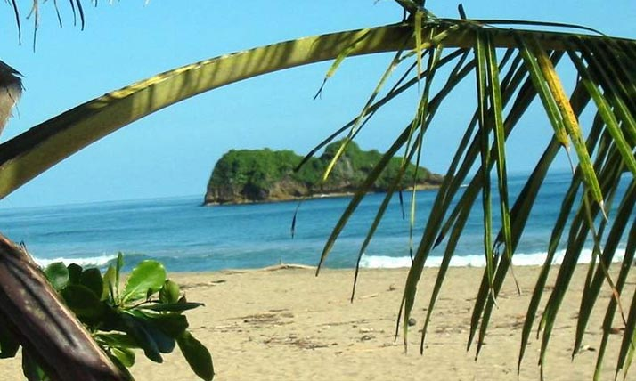
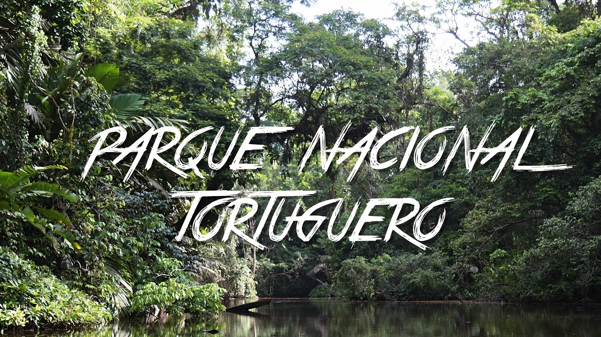

Puerto Viejo, Costa Rica tiene mucho que ofrecer. Desde surf de clase mundial, snorkel y buceo entre los muchos arrecifes en las aguas azules, hasta ciclismo de montaña, cabalgatas y visitas culturales a pueblos indígenas.
El cercano Parque Nacional Cahuita, que protege el arrecife de coral más grande y único de Costa Rica, combina hermosas playas con exuberantes bosques tropicales costeros para proporcionar un ambiente verdaderamente maravilloso para relajarse.

Visitar
Parque Nacional Tortuguero
Un lugar clave para la cría de tortugas en el Caribe, el Parque Nacional Tortuguero es el hábitat y lugar de anidación de cuatro de las ocho especies de tortugas marinas en el mundo.
Conocido por sus ríos serpenteantes y hermosas lagunas, esta área también es hogar del manatí antillano en peligro de extinción.

Visitar
Manuel Antonio y Parque Nacional Manuel Antonio
Lo que este parque carece de tamaño, lo compensa con la increíble riqueza de atracciones que se encuentran aquí.
Impresionantes playas tropicales, una increíble variedad de coloridas aves y vida silvestre, rica y densa forestación, fácil acceso y una gran cantidad de cosas por hacer, todo esto hace de este parque y esta zona una de las atracciones turísticas más populares de Costa Rica.